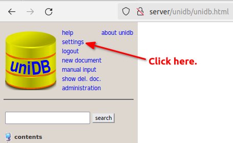
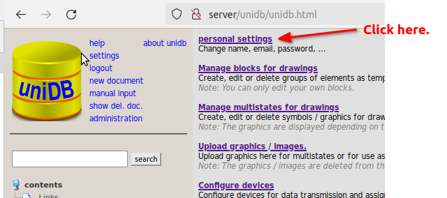

Change admin password
| 1.) | Open the unidb in your browser and log in as admin: | ||
| userername: | admin | ||
| password: | adminDH | ||
2.) | Click on the settings link at the top left. | ||
 | |||
3.) | The settings page opens. Please follow the personal settings link there. | ||
 | |||
4.) | You can now enter your new password in the marked area 1. | ||
| If you want, select another language in area 2. | |||
| Please don't forget to press the save button at the bottom. | |||
 | |||
5.) | ready | ||